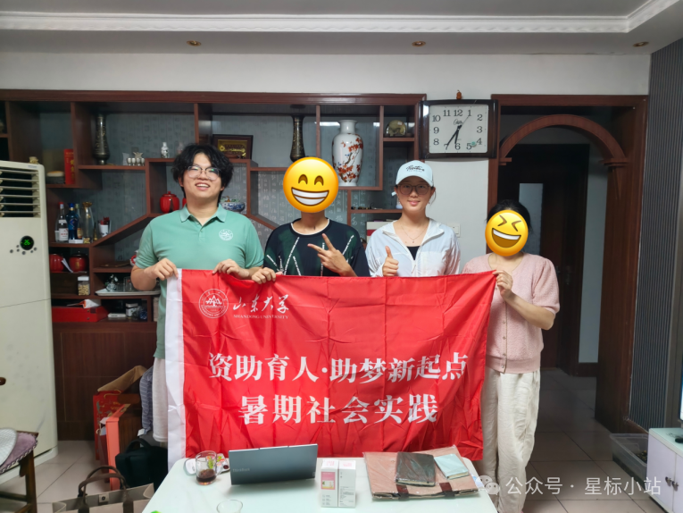
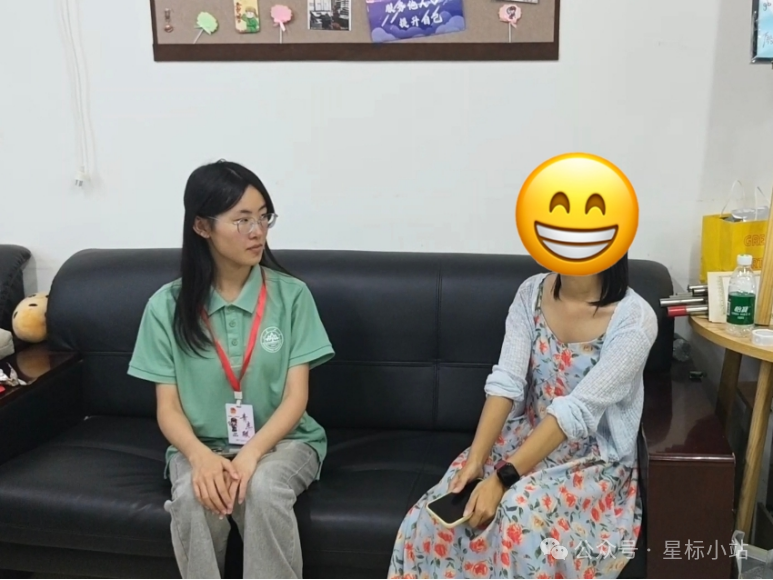
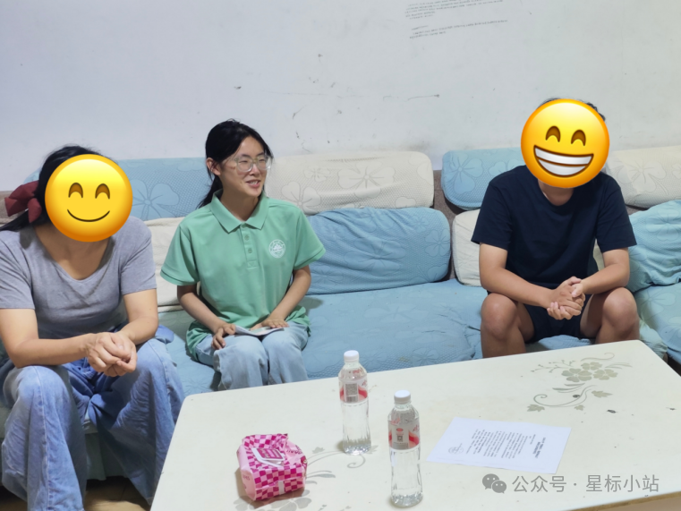

为切实摸清2026级家庭经济困难新生真实情况、精准对接新生入学需求，近日，山东大学青年志愿者联合会青檐护航队立足学生实际、创新走访形式，扎实完成本次资助育人社会实践工作。

本次实践采取线上线下相结合的采访形式，前期发放调查问卷，统计新生各类疑难需求；后期在此基础上重点深度讲解，累计完成全覆盖走访41人，沟通总时长超800分钟。其中，在线下家访环节中，队员深入枣庄、济南、威海、保定、石家庄、重庆等各地市的基层乡镇、社区，实地入户走访困难新生家庭，与家长、学生面对面深度交流；针对路程偏远、出行不便、家庭情况特殊或不便入户的新生，我们摒弃单一走访模式，依托青年志愿者联合会的组织优势，将同学邀请至学校青志联办公室，进行校园现场谈心的家访模式创新；另外，我们还广泛开展了线上视频访谈、微信信息交流等特殊形式，充分尊重不同家庭的实际情况，为新生提供便利，减少家庭心理负担,全方位、多角度掌握新生家庭困境与入学难题。

实践开展期间，队员分组开展对接工作。各个队员与学生及家长亲切交谈，细致摸排家庭收入、现实负担、成长环境，认真记录学生思想动态，为后续分层分类开展精准帮扶积累真实的一手资料。队员同时承担助学政策宣讲的职责，针对同乡的新生，采用了普通话与当地方言相结合的介绍方式，多次运用地方特色俗语将原本复杂的政策简单化解读，比如同学们关注最多的助学贷款就是把以后的钱“倒腾”到现在来缓解燃眉之急，向学生和家长细致介绍国家助学贷款、助学金、临时困难补助、勤工助学等各项资助政策，耐心解答关于学费缴纳、在校生活保障等方面的疑问，打消家庭对于求学开支的顾虑。除政策科普之外，实践队员立足新生的成长需要，围绕大学适应、学业规划、心态调节等方面给予引导建议，帮助新生建立对大学生活的清晰认知，激发自立自强的奋进热情，做好新生踏入大学阶段的成长引路人。

活动过程中，团队注重收集学生真实诉求，梳理大家提出的问题与建议，整理形成调研记录，为优化助学服务工作提供来自基层的实践参考。参与实践的青年队员也在服务过程中增长沟通调研本领，真切体会资助育人的意义，践行青年学生的社会责任。
此次社会实践跳出单一的家访定式，在工作形式上寻求创新，既得到了受访新生与家长的理解和认可，也让大家真切感受到暖心的关怀。下一步，队伍将汇总梳理本次走访的全部调研成果，推动实践成果落地，持续关注困难新生的成长发展，用青年实干力量，助力学子安心求学、奔赴属于自己的崭新征程。
文/桂如星
图/山东大学青年志愿者联合会青檐护航队
编辑/桂如星 无非吟